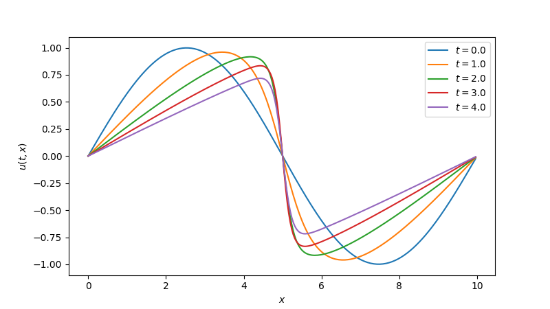

Pseudo-spectral solver for Burgers' equation¶
This is an advanced tutorial demonstrating how to solve Burgers' equation using an implicit-explicit (IMEX) scheme. The stiff diffusive term is treated implicitly with a spectral linear solver, while the non-linear convective term is treated explicitly with RK4.
Problem statement¶
The 1D viscous Burgers' equation is
where \(\nu\) is the kinematic viscosity. The equation combines non-linear advection (\(-u \frac{\partial u}{\partial x}\)) with linear diffusion (\(\nu \frac{\partial^2 u}{\partial x^2}\)), making it a useful model for understanding shock formation and numerical stiffness.
We solve on a periodic domain \(x \in [0, L)\) with initial condition
Why IMEX?¶
A fully explicit method must respect both stability limits:
- Diffusive CFL: \(\Delta t \lesssim \Delta x^2 / (2\nu)\)
- Advective CFL: \(\Delta t \lesssim \Delta x / \max|u|\)
On fine grids or for large \(\nu\), the diffusive constraint dominates because it scales as \(\Delta x^2\). By treating diffusion implicitly, we eliminate the diffusive CFL restriction entirely and only need to satisfy the less restrictive advective CFL condition. In practice, this typically allows much larger time steps.
1. Spatial discretisation¶
We discretise on a uniform periodic grid with \(n\) points and spacing \(\Delta x = L / n\). Both the Laplacian and the first derivative use second-order central finite differences.
import jax
import jax.numpy as jnp
def diffusion_rhs(t, u, params):
"""Diffusion: nu * d²u/dx² (periodic, central differences)."""
nu, dx = params["nu"], params["dx"]
return nu * (jnp.roll(u, -1) - 2 * u + jnp.roll(u, 1)) / dx**2
def advection_rhs(t, u, params):
"""Advection: -u * du/dx (periodic, central differences)."""
dx = params["dx"]
dudx = (jnp.roll(u, -1) - jnp.roll(u, 1)) / (2 * dx)
return -u * dudx
Both functions receive the same params dict; advection_rhs ignores
nu, but the shared signature keeps the interface uniform.
2. Parameters and initial condition¶
nu = 1e-1 # viscosity
L = 10.0 # domain length
n = 256 # number of grid points
dx = L / n
A = 1.0 # initial amplitude
x = jnp.arange(0, L, dx)
y0 = A * jnp.sin(2 * jnp.pi * x / L)
t_span = (0.0, 5.0)
3. Choosing a spectral transform¶
The choice of spectral transform is dictated by the boundary conditions.
Since our problem has periodic boundary conditions, we use the
real-valued DFT via jnp.fft.rfft / jnp.fft.irfft.
In other cases, a discrete cosine or sine transform may be the better choice.
4. Constructing the spectral operator and solver¶
The spectral approach works by diagonalising the discrete Laplacian. For the second-order central difference stencil on a periodic grid, the eigenvalues are
where \(k = 2\pi m / L\) are the discrete wavenumbers. The implicit system at each time step is \((I - \Delta t \nu \sigma_k)\hat{u}_k = \hat{b}_k\), which reduces to a pointwise division in Fourier space.
In pardax, this is split into two components:
- A SpectralOperator that holds the eigenvalues \(\nu \sigma_k\) and builds the spectral symbol \(1 - \Delta t \nu \sigma_k\) at each time step.
- A SpectralSolver that owns the forward and inverse transforms and performs the pointwise solve.
import pardax as pdx
# Wavenumbers for a real-valued periodic signal
k = 2 * jnp.pi * jnp.fft.rfftfreq(n, d=dx)
# Eigenvalues of the discrete Laplacian (including viscosity)
sigma = -4 * nu * jnp.sin(k * dx / 2)**2 / dx**2
operator = pdx.SpectralOperator(eigvals=sigma)
solver = pdx.SpectralSolver(
forward=jnp.fft.rfft,
backward=lambda x: jnp.fft.irfft(x, n=n),
)
5. Assembling the IMEX stepper¶
IMEX splitting requires a custom time-stepping loop because solve_ivp and
integrate expect a single callable as fun. Each sub-stepper receives its
own callable and the updated stepper state is threaded through the loop carry
(see Extending the solver for a full
explanation).
root_finder = pdx.LinearRootFinder(
linsolver=solver,
operator=operator,
)
explicit = pdx.RK4()
implicit = pdx.BackwardEuler(root_finder=root_finder)
6. Solve and visualise¶
import math
params = {"nu": nu, "dx": dx}
step_size = 0.8 * dx / A # advective CFL
num_steps = math.ceil((t_span[1] - t_span[0]) / step_size)
step_size = jnp.asarray((t_span[1] - t_span[0]) / num_steps)
def imex_step(carry, _):
t, y, exp_st, imp_st = carry
y_star, exp_st = exp_st(advection_rhs, t, y, step_size, params)
y_new, imp_st = imp_st(diffusion_rhs, t, y_star, step_size, params)
return (t + step_size, y_new, exp_st, imp_st), (t + step_size, y_new)
(_, y_final, _, _), (t_all, y_all) = jax.lax.scan(
imex_step, (t_span[0], y0, explicit, implicit), length=num_steps
)
import matplotlib.pyplot as plt
fig, ax = plt.subplots(figsize=(8, 4.5))
stride = max(1, len(t_all) // 5)
for i in range(0, len(t_all), stride):
ax.plot(x, y_all[i], label=f"$t = {t_all[i]:.1f}$")
ax.set_xlabel("$x$")
ax.set_ylabel("$u(t, x)$")
ax.legend()
plt.show()
